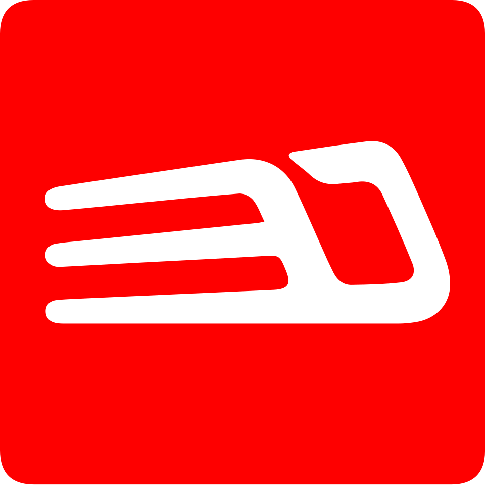

네오트랜스 Neo Trans
네오트랜스(Neo Trans)는 대한민국의 광역철도 노선인 신분당선과 용인 경전철을 운영하는 기업이다.
최종 업데이트

네오트랜스는 어떤 브랜드인가
네오트랜스는 대한민국의 광역철도 노선인 신분당선과 용인 경전철을 운영한다. 신분당선은 강남-정자역 구간 착공 후 개통되었으며, 이후 정자-광교 구간까지 확장 개통했다.
이와 함께 용인 경전철의 운영 및 유지보수 업무를 시작했다. 네오트랜스는 신분당선 전 구간과 용인 경전철 전 구간의 역무 관리 및 선로 유지보수운영 업무를 주요하게 담당한다.
운영 과정에서 SMRT, YG 엔터테인먼트, SBS, 한국경제신문 등 여러 국내외 기관 및 기업과 홍보마케팅 및 사회공헌 활동을 위한 업무협약을 체결했다. 또한 세계대중교통연맹에 가입하고 한국철도시설공단, 국토교통과학기술진흥원, 한국철도기술연구원 등과 기술 교류 협력을 진행했다.
안전 관리와 서비스 품질에 대한 노력으로 ISO 9001, OHSAS 18,001 인증을 획득하고 무재해 기록을 달성하는 성과를 보였다.
네오트랜스는 어떻게 시작되고 성장했나
네오트랜스의 사업 제안은 2002년 7월 두산건설, 대림산업 등 7개 회사 컨소시엄이 신분당선 사업제안서를 제출하면서 시작되었다. 이후 2003년 9월 신분당선 전철 민간제안사업 제3자 제안요청 공고가 있었고, 2003년 12월 민간제안사업 우선협상대상자로 지정되었다.
2005년 3월 실시협약 체결 및 사업시행자로 지정된 후, 운영사인 네오트랜스는 2005년 5월 SPC 신분당선과 함께 설립되었다. 같은 해 7월에는 신분당선 강남-정자역 구간의 착공이 이루어졌다.
신분당선은 2011년 10월 28일 개통되었고, 2016년 1월 30일에는 정자-광교 구간의 2단계가 개통되었다.
네오트랜스의 브랜드 아이덴티티는 무엇인가
네오트랜스는 신분당선과 용인 경전철이라는 광역철도 노선의 전문 운영사로서, 안전하고 효율적인 철도 서비스를 제공한다. 체계적인 시스템 운영과 지속적인 안전 관리 노력을 통해 대중교통 이용객에게 신뢰를 준다.
네오트랜스의 대표 제품과 서비스는 무엇인가
네오트랜스는 신분당선과 용인 경전철 노선의 운영 및 관리를 주요 사업으로 한다. 신분당선은 16개 역을, 용인 경전철은 15개 역을 운영하며, 두 노선의 전 구간에 걸쳐 역무 관리 및 선로 유지보수운영 업무를 수행한다.
또한 SMRT와 PM사업 MOU를 체결하고, 한국철도시설공단과 연장선 PM사업 MOU를 체결하는 등 프로젝트 관리 분야에서도 역할을 했다. 전동차 초도편성 반입 및 시운전 개시, 광교차량사업소 운영 개시 등을 통해 효율적인 철도 시스템 운영을 위한 제반 사업을 진행한다.
네오트랜스는 지금 어떤 상태인가
네오트랜스는 경기도 성남시에 본점을 두고 있으며, 용인에도 지점을 운영한다. 현재 신분당선 16개 역과 용인 경전철 15개 역의 운영 및 유지보수 업무를 담당하고 있다.
운영 효율성과 안전성을 인정받아 국민안전처 재난관리평가 우수기관으로 선정되었으며, 기업혁신대상 대한상공회장상을 수상했다. 또한 개통 이후 4개년 연속 무사고를 달성하고 무재해 3배를 달성하는 등 안정적인 운영을 이어간다.
네오트랜스 로고는 어떻게 변해왔나
자주 묻는 질문
네오트랜스는 어느 나라 브랜드인가요?
네오트랜스는 한국의 모빌리티 브랜드입니다.
네오트랜스는 언제 설립되었나요?
네오트랜스는 2005년 설립되었습니다.
네오트랜스의 브랜드 아이덴티티는 무엇인가요?
네오트랜스는 신분당선과 용인 경전철이라는 광역철도 노선의 전문 운영사로서, 안전하고 효율적인 철도 서비스를 제공한다.
네오트랜스의 대표 제품은 무엇인가요?
네오트랜스는 신분당선과 용인 경전철 노선의 운영 및 관리를 주요 사업으로 한다.
네오트랜스는 현재 어떤 상태인가요?
네오트랜스는 경기도 성남시에 본점을 두고 있으며, 용인에도 지점을 운영한다.
네오트랜스의 본사는 어디에 있나요?
네오트랜스의 본사는 성남시에 있습니다(위키데이터 기준).
네오트랜스의 공식 웹사이트는 어디인가요?
네오트랜스의 공식 웹사이트는 http://www.shinbundang.co.kr/ 입니다.
출처와 검증
네오트랜스 관련 참고: 공식 웹사이트 · 위키데이터 Q13709959 · 한국어 위키백과 · 영어 위키백과. 브랜드명은 한글과 원어를 함께 표기하되 데이터에 없는 표기는 만들지 않습니다. 기원 국가·설립연도는 검수된 정의문에서 확인된 값을 우선하고, 없을 때만 공식 웹사이트 URL이 일치하는 위키데이터 개체의 값을 씁니다. 위키데이터 값은 2026-09-07 기준입니다.